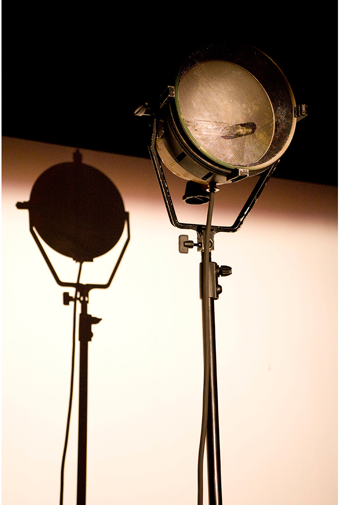
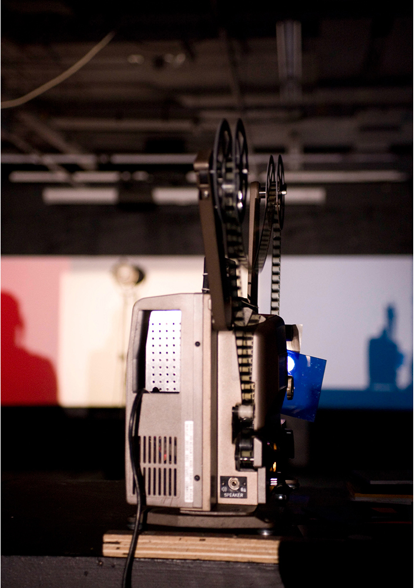

|

|
 |
Cinema... Corpus vs. Cerebrum
2008 — 2010
Performance — installation
4 16mm film projectors, live sound, contact microphones, crystals, halogen lamp, portable screen, film loops
Produced and presented with Víctor Esther G. (USA), Maximilian Le Cain (Ireland) and Rafael Martínez del Pozo (Spain) Bolex assistance: Damien Saville (France/UK)
Video documentation: www.vimeo.com/51479634
Funded by The Arts Council of Ireland
— The Art of Film Award |
Focusing on the body in the cinematic experience (the body of the machine, the body of the audience, and that of the projectionist), cinema is reduced to its essential properties and materials, being the flux of conical light, luminous vibration and the sound generated by the projectors themselves the only elements left for exploration. By means of a materialist treatment of the medium’s specificity and an approach to public film projection as a live, immediate and social experience, cinema’s illusionistic values are dismantled, while we can witness the destruction of the technical elements that make possible a “suspension of disbelief” during the act of perception. Returning cinema’s gaze to the machine, we approach the existing divergences between perceived reality and the reality of the medium. |